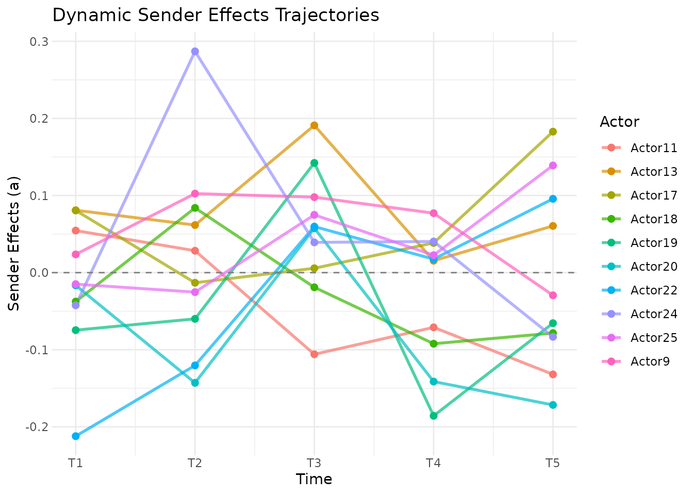
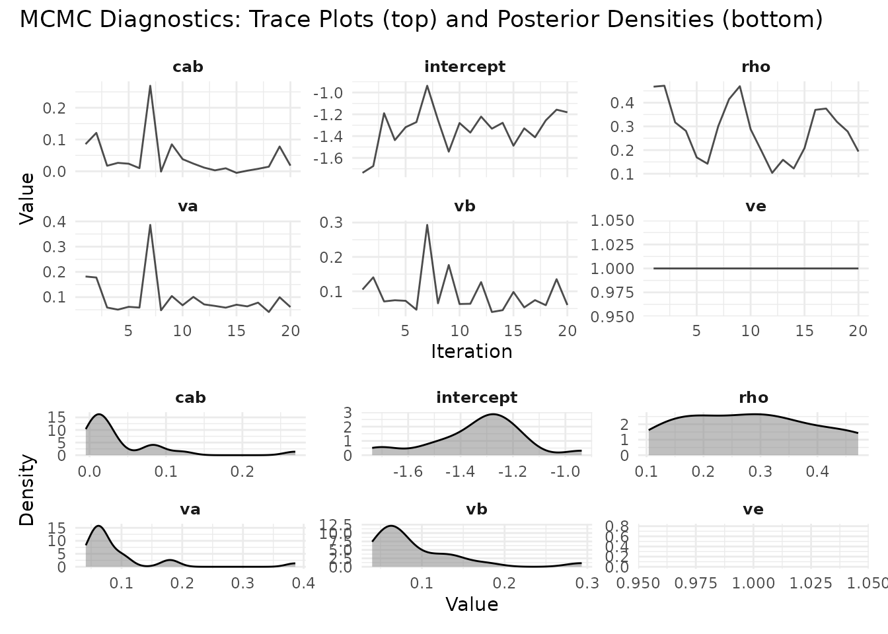

Dynamic Effects in Longitudinal AME Models
Cassy Dorff, Tosin Salau, Shahryar Minhas
2026-03-04
Source:vignettes/dynamic_effects.Rmd
dynamic_effects.RmdIntroduction
Networks change. Countries that were close allies a decade ago may have drifted apart. A legislator’s co-sponsorship patterns shift as they gain seniority or switch committee assignments. A user’s purchasing habits evolve as their tastes change.
The standard AME model assumes that each actor has a fixed latent
position and fixed additive effects across all time periods. This is a
reasonable starting point (pooling across time gives you more data and
more precise estimates), but it can miss important dynamics. The
lame package provides two mechanisms for letting the model
capture temporal change: dynamic_uv for time-varying latent
positions and dynamic_ab for time-varying additive
effects.
This vignette explains what these options do, when to use them, and how to interpret the results.
What Are Dynamic Effects?
The Static Baseline
In the standard AME model for longitudinal data, the tie between actors and at time is:
The covariates () can vary over time, but everything else (the sender effect , the receiver effect , and the latent positions and ) is constant. This means the model assumes that a country’s tendency to sanction others, or its position in the latent “sanctioning space,” is the same in 1993 as in 2000.
Dynamic Latent Positions (dynamic_uv = TRUE)
When you set dynamic_uv = TRUE, each actor’s latent
position evolves over time according to an AR(1) process:
The autoregressive parameter controls how persistent the positions are. A value close to 1 means positions change slowly, as last year’s position is a strong predictor of this year’s. A value close to 0 means positions are essentially re-drawn each period. In practice, is estimated from the data, so you don’t need to choose it yourself.
This is useful when you believe the underlying community structure is evolving: alliances shift, social groups re-form, trading blocs realign.
Dynamic Additive Effects (dynamic_ab = TRUE)
When you set dynamic_ab = TRUE, the sender and receiver
effects evolve over time:
This captures changes in actors’ overall activity levels. A country
might become a more active sanctioner after a change in government. A
student might become more or less socially active across semesters.
These are changes in how much an actor participates, not in who they
connect with (that’s what dynamic_uv captures).
You can use either option alone or combine them. In practice,
dynamic_ab is often a good place to start, since changes in
overall activity are common and relatively easy to estimate.
dynamic_uv adds more flexibility but also more
parameters.
Prior Specifications
The AR(1) coefficients and innovation variances have sensible default priors:
- , centered on high persistence
- , slightly less persistent
These can be customized via the prior argument if you
have strong beliefs about the rate of change:
prior_custom <- list(
rho_uv_mean = 0.95, # expect very slow change in latent positions
rho_uv_sd = 0.05, # tight prior
sigma_uv_shape = 3,
sigma_uv_scale = 2
)Practical Example
We simulate a simple longitudinal network and fit models with and without dynamic effects to see the difference.
library(lame)
set.seed(6886)
n <- 25 # actors
n_periods <- 5
# Generate sparse binary networks
Y_list <- list()
for(t in 1:n_periods) {
Y_t <- matrix(rbinom(n*n, 1, 0.1), n, n)
diag(Y_t) <- NA
rownames(Y_t) <- colnames(Y_t) <- paste0("Actor", 1:n)
Y_list[[t]] <- Y_t
}
# Fit model with both dynamic effects
# Note: iterations are reduced for vignette speed.
# Use burn >= 1000 and nscan >= 5000 for real analyses.
fit_dynamic <- lame(
Y = Y_list,
R = 2,
dynamic_uv = TRUE,
dynamic_ab = TRUE,
family = "binary",
burn = 100,
nscan = 500,
odens = 25,
print = FALSE,
plot = FALSE
)
#> Note: Square matrix assumed to be unipartite. Use mode='bipartite' for square bipartite networks.Visualizing Dynamic Effects
The trajectory plot shows how each actor’s latent position moves through the 2-dimensional space over time. Each line traces one actor’s path from the first to the last period. Actors whose lines are short stayed in roughly the same position; actors with long, wandering lines experienced substantial shifts in their network role.
uv_plot(fit_dynamic, plot_type = "trajectory")
The ab_plot with plot_type = "trajectory"
shows how each actor’s additive effect changes over time. Rising lines
indicate actors who became more active (or more popular) over the
observation window; falling lines indicate the opposite. This is
particularly useful for identifying actors who experienced a structural
break in their network behavior.
ab_plot(fit_dynamic, effect = "sender", plot_type = "trajectory")
#> ℹ Showing top 5 and bottom 5 actors by average effect
#> → Use `show_actors` to specify actors to display
As always, check convergence. Dynamic models have more parameters, so adequate mixing is harder to achieve and requires longer chains.
trace_plot(fit_dynamic)
Comparing Model Specifications
A natural workflow is to fit several specifications and compare them:
# Static model (no dynamic effects)
fit_static <- lame(Y_list, R = 2, family = "binary",
burn = 100, nscan = 400, odens = 20,
print = FALSE, plot = FALSE)
# Dynamic latent positions only
fit_uv <- lame(Y_list, R = 2, dynamic_uv = TRUE, family = "binary",
burn = 100, nscan = 400, odens = 20,
print = FALSE, plot = FALSE)
# Dynamic additive effects only
fit_ab <- lame(Y_list, R = 2, dynamic_ab = TRUE, family = "binary",
burn = 100, nscan = 400, odens = 20,
print = FALSE, plot = FALSE)
# Full dynamic
fit_full <- lame(Y_list, R = 2, dynamic_uv = TRUE, dynamic_ab = TRUE,
family = "binary",
burn = 100, nscan = 400, odens = 20,
print = FALSE, plot = FALSE)Compare the GOF statistics across models. The model that best reproduces the observed network statistics (heterogeneity, transitivity, dyadic dependence) without unnecessary complexity is usually the best choice.
if(!is.null(fit_static$GOF) && !is.null(fit_full$GOF)) {
cat("Static model GOF (sample):\n")
print(head(fit_static$GOF))
cat("\nFull dynamic model GOF (sample):\n")
print(head(fit_full$GOF))
}
#> Static model GOF (sample):
#> $sd.rowmean
#> obs 1 2 3 4 5
#> [1,] 0.04659041 0.05828665 0.06226824 0.06584831 0.05600000 0.10066446
#> [2,] 0.06641285 0.06458070 0.07752849 0.08349052 0.05406169 0.06379133
#> [3,] 0.05033223 0.06839103 0.04969239 0.04424176 0.05694442 0.07739078
#> [4,] 0.06332982 0.06273755 0.05919459 0.05537749 0.05828665 0.05759630
#> [5,] 0.05941941 0.06248200 0.07346655 0.05479659 0.07404503 0.06780364
#> 6 7 8 9 10 11
#> [1,] 0.06645299 0.05479659 0.04664762 0.05759630 0.06478683 0.05096404
#> [2,] 0.06681317 0.06218253 0.05736433 0.05666274 0.07804272 0.07669854
#> [3,] 0.07529498 0.07302967 0.06000000 0.04990658 0.05450382 0.05805744
#> [4,] 0.06218253 0.06881860 0.06096994 0.06437391 0.06621178 0.06031031
#> [5,] 0.04207929 0.04995998 0.08491564 0.07310267 0.06997142 0.05537749
#> 12 13 14 15 16 17
#> [1,] 0.04760952 0.05968808 0.07023769 0.06324555 0.05694442 0.07831560
#> [2,] 0.06118823 0.07745967 0.06101366 0.06916647 0.04995998 0.07236942
#> [3,] 0.06839103 0.06997142 0.06784296 0.06928203 0.05623759 0.05017303
#> [4,] 0.05331666 0.06057502 0.06429101 0.06420800 0.05986652 0.07277362
#> [5,] 0.06324555 0.06831301 0.05576140 0.07831560 0.05455273 0.05523284
#> 18 19 20
#> [1,] 0.05455273 0.07166589 0.06544209
#> [2,] 0.07790593 0.05741080 0.06800000
#> [3,] 0.06252466 0.07648965 0.07364781
#> [4,] 0.05901412 0.05689757 0.07292005
#> [5,] 0.06974238 0.06096994 0.06000000
#>
#> $sd.colmean
#> obs 1 2 3 4 5
#> [1,] 0.06955094 0.06053098 0.06118823 0.06166577 0.04969239 0.04472136
#> [2,] 0.05547372 0.05326662 0.06118823 0.06031031 0.06420800 0.08125679
#> [3,] 0.06429101 0.06540133 0.05833238 0.05851496 0.04805552 0.08320256
#> [4,] 0.05043808 0.05356616 0.06955094 0.06531973 0.05474791 0.04744119
#> [5,] 0.04393935 0.05689757 0.06974238 0.05479659 0.06744875 0.07872314
#> 6 7 8 9 10 11
#> [1,] 0.06744875 0.06978061 0.04942334 0.07382863 0.05096404 0.05351635
#> [2,] 0.04393935 0.08000000 0.06800000 0.07218495 0.06075086 0.06231105
#> [3,] 0.05717808 0.07023769 0.06429101 0.04855238 0.07770028 0.07144228
#> [4,] 0.07211103 0.06784296 0.06205374 0.06540133 0.05986652 0.05571355
#> [5,] 0.04513683 0.05623759 0.07125541 0.06740920 0.08997778 0.06928203
#> 12 13 14 15 16 17
#> [1,] 0.04472136 0.06400000 0.09018500 0.05887841 0.05810336 0.07023769
#> [2,] 0.06641285 0.05656854 0.06920501 0.05642694 0.05856051 0.06661331
#> [3,] 0.05425864 0.06400000 0.07617524 0.07211103 0.04995998 0.05642694
#> [4,] 0.06862458 0.07959899 0.06733003 0.05991105 0.07472617 0.05856051
#> [5,] 0.06324555 0.06110101 0.06252466 0.06110101 0.04942334 0.07106804
#> 18 19 20
#> [1,] 0.05075431 0.06482798 0.06843001
#> [2,] 0.06166577 0.05256108 0.07088018
#> [3,] 0.05810336 0.05986652 0.05376492
#> [4,] 0.06231105 0.05919459 0.06096994
#> [5,] 0.06374951 0.04744119 0.06324555
#>
#> $dyad.dep
#> obs 1 2 3 4
#> [1,] 0.019269395 -0.08506944 0.0008429252 0.092692118 0.026012947
#> [2,] -0.009636809 0.05849862 0.0948083779 0.006229799 -0.090750436
#> [3,] 0.021291209 0.03717591 0.0926921176 0.027048064 0.113504420
#> [4,] 0.146174863 0.09269212 -0.0199598293 -0.069321534 -0.003450161
#> [5,] -0.003450161 0.09772784 0.0802962672 0.042929560 0.033117516
#> 5 6 7 8 9 10
#> [1,] -0.01304945 0.10473844 0.04292956 0.056725318 0.0080553393 -0.003450161
#> [2,] -0.02307530 0.04779620 0.06692407 -0.013491600 0.0008429252 0.126074134
#> [3,] 0.09647834 0.01547443 0.07817109 0.078171091 0.0270480638 0.103977687
#> [4,] 0.12035096 0.02312600 0.01547443 0.017455413 0.0008429252 0.120350961
#> [5,] 0.08029627 0.02206228 0.01173752 -0.009636809 -0.0354900593 0.087757708
#> 11 12 13 14 15 16
#> [1,] 0.04779620 0.066091954 0.113973145 -0.013049451 0.13636364 -0.05142499
#> [2,] 0.02911936 -0.035490059 0.078171091 0.007076834 -0.10424028 -0.02099159
#> [3,] 0.21541552 -0.009636809 -0.019766758 -0.061743267 0.12431319 -0.07204117
#> [4,] 0.01926939 0.031039715 0.009927131 -0.043478261 0.05220971 0.08291909
#> [5,] 0.05563187 0.043478261 -0.043478261 0.072272068 -0.01674641 0.05672532
#> 17 18 19 20
#> [1,] 0.066924067 0.102738718 0.07593199 -0.07431387
#> [2,] 0.006229799 0.015474426 0.01173752 0.06758773
#> [3,] -0.084187131 0.056725318 -0.01642544 -0.05403126
#> [4,] 0.087757708 -0.006185392 0.05849862 -0.06680841
#> [5,] 0.008055339 -0.046150167 -0.02937653 -0.06932153
#>
#> $cycle.dep
#> obs 1 2 3 4 5
#> [1,] 0.004000134 0.01046658 0.005156871 0.002587708 -0.015568966 0.02201432
#> [2,] 0.021198238 0.02633613 -0.024101497 0.004373551 -0.012779088 0.01027045
#> [3,] 0.002352264 -0.01272342 0.015713763 0.007504213 -0.016753600 -0.02124150
#> [4,] 0.006223826 0.01783294 -0.002866409 0.011567670 -0.001622874 -0.00245492
#> [5,] 0.006189746 -0.01329777 0.013031194 -0.004518300 0.002895878 -0.00774277
#> 6 7 8 9 10
#> [1,] -0.025074716 -0.019276601 0.004555402 -0.004625065 0.0172439315
#> [2,] -0.018725300 0.010373368 -0.018088381 0.036966200 0.0005782761
#> [3,] -0.001830455 -0.032485374 -0.002397445 -0.003371258 -0.0412498214
#> [4,] -0.013524059 -0.001047002 -0.004893032 0.018745891 -0.0296491648
#> [5,] -0.002387489 0.036320190 -0.003689672 0.024631731 0.0011540548
#> 11 12 13 14 15
#> [1,] -0.02568401 0.007718744 0.014090401 0.008547158 -0.006028177
#> [2,] -0.01177056 0.014267025 0.002637189 -0.019915657 0.017640376
#> [3,] -0.01011443 0.018921703 0.018251238 -0.009806268 -0.013916067
#> [4,] 0.03553099 -0.006391981 -0.010039975 0.001662737 0.008183262
#> [5,] 0.02691637 0.026220077 -0.002558056 -0.001133211 0.009727438
#> 16 17 18 19 20
#> [1,] 0.012828753 0.004120035 -0.023634571 -0.008233251 0.012142925
#> [2,] -0.018830529 0.005020762 0.009831441 -0.005068708 -0.008276965
#> [3,] 0.008136620 0.001705762 -0.006122365 0.013551915 0.014648582
#> [4,] 0.013005829 -0.009597775 0.006737459 -0.010969457 0.016622737
#> [5,] -0.007459175 0.011718455 -0.001428679 -0.014029026 0.004974697
#>
#> $trans.dep
#> obs 1 2 3 4 5
#> [1,] -0.03405087 -0.02058727 -0.02476477 -0.02331335 -0.01769822 -0.01431110
#> [2,] -0.02658332 -0.01838410 -0.03820428 -0.02049593 -0.02484362 -0.03639988
#> [3,] -0.02865812 -0.01839430 -0.01331682 -0.01676637 -0.03929119 -0.01128881
#> [4,] -0.02792264 -0.02672972 -0.01932682 -0.04053679 -0.02695289 -0.02035146
#> [5,] -0.03012973 -0.03208649 -0.03827971 -0.04214148 -0.01838610 -0.04510440
#> 6 7 8 9 10 11
#> [1,] -0.02869628 -0.02601291 -0.02159594 -0.03009464 -0.02841185 -0.01330245
#> [2,] -0.03431534 -0.01055250 -0.03474936 -0.02679316 -0.04763911 -0.02833569
#> [3,] -0.03039011 -0.03580184 -0.02914893 -0.02703842 -0.04057938 -0.03045536
#> [4,] -0.01873599 -0.03962031 -0.02638574 -0.01821062 -0.02532522 -0.01707744
#> [5,] -0.02236458 -0.02501249 -0.02885986 -0.04103486 -0.02943701 -0.02691637
#> 12 13 14 15 16 17
#> [1,] -0.01404752 -0.019341197 -0.03104630 -0.03631790 -0.02457797 -0.04590663
#> [2,] -0.02852061 -0.032745097 -0.03546665 -0.02488792 -0.02716216 -0.03781795
#> [3,] -0.01864661 -0.016108441 -0.02503866 -0.03228527 -0.01707958 -0.03747875
#> [4,] -0.03449073 -0.023952432 -0.00498821 -0.02974730 -0.02821875 -0.02533869
#> [5,] -0.01342980 -0.008569489 -0.01596927 -0.02237535 -0.03222357 -0.02734415
#> 18 19 20
#> [1,] -0.03465768 -0.025278716 -0.03063136
#> [2,] -0.01921627 -0.037650389 -0.02643039
#> [3,] -0.02170177 -0.017942805 -0.02532948
#> [4,] -0.03707310 -0.018875190 -0.02653086
#> [5,] -0.00852925 -0.007776066 -0.04119609
#>
#>
#> Full dynamic model GOF (sample):
#> $sd.rowmean
#> obs 1 2 3 4 5
#> [1,] 0.04659041 0.05736433 0.05896892 0.04636090 0.05499091 0.05642694
#> [2,] 0.06641285 0.05406169 0.09318083 0.05887841 0.08554141 0.08460102
#> [3,] 0.05033223 0.07364781 0.06831301 0.04898979 0.06641285 0.06740920
#> [4,] 0.06332982 0.07050296 0.06858571 0.07571878 0.08830251 0.08223543
#> [5,] 0.05941941 0.05773503 0.05805744 0.04000000 0.06661331 0.08000000
#> 6 7 8 9 10 11
#> [1,] 0.07016172 0.04963869 0.02026491 0.09729680 0.05225578 0.08304216
#> [2,] 0.06877984 0.06429101 0.03525148 0.07418895 0.03555278 0.07564831
#> [3,] 0.07735632 0.07393691 0.04687572 0.09443163 0.04543127 0.05623759
#> [4,] 0.07436845 0.04898979 0.05163978 0.07125541 0.04270831 0.05547372
#> [5,] 0.06601010 0.04601449 0.02612789 0.08092795 0.03946306 0.03843609
#> 12 13 14 15 16 17
#> [1,] 0.11530828 0.06862458 0.07635007 0.04543127 0.09572182 0.05656854
#> [2,] 0.09965273 0.05782733 0.07635007 0.06337192 0.08349052 0.06166577
#> [3,] 0.07110556 0.06075086 0.08009994 0.04163332 0.07292005 0.08320256
#> [4,] 0.06661331 0.06916647 0.03448671 0.04749737 0.07236942 0.05600000
#> [5,] 0.08979978 0.05075431 0.05887841 0.04543127 0.05986652 0.08082904
#> 18 19 20
#> [1,] 0.05225578 0.06008882 0.05163978
#> [2,] 0.05600000 0.08326664 0.03525148
#> [3,] 0.03815757 0.06544209 0.04472136
#> [4,] 0.04548993 0.07302967 0.04630335
#> [5,] 0.02508652 0.05764258 0.03158058
#>
#> $sd.colmean
#> obs 1 2 3 4 5
#> [1,] 0.06955094 0.08845338 0.05896892 0.06843001 0.05964338 0.08708616
#> [2,] 0.05547372 0.06725077 0.08092795 0.04320494 0.06621178 0.05964338
#> [3,] 0.06429101 0.09429033 0.08246211 0.04163332 0.08252676 0.06839103
#> [4,] 0.05043808 0.05070174 0.05919459 0.05163978 0.06269503 0.07368401
#> [5,] 0.04393935 0.06928203 0.05070174 0.04472136 0.05919459 0.06928203
#> 6 7 8 9 10 11
#> [1,] 0.08634813 0.06374951 0.03282276 0.08793937 0.04079216 0.07547185
#> [2,] 0.07346655 0.06218253 0.03709447 0.09748846 0.03158058 0.07203703
#> [3,] 0.08475848 0.06928203 0.03555278 0.07821338 0.03912374 0.06803920
#> [4,] 0.06374951 0.06110101 0.04163332 0.08569714 0.04270831 0.05547372
#> [5,] 0.06075086 0.07200000 0.02856571 0.08726970 0.04715930 0.07922962
#> 12 13 14 15 16 17
#> [1,] 0.09360912 0.07943131 0.05968808 0.04393935 0.09846827 0.05291503
#> [2,] 0.07346655 0.06226824 0.06079474 0.05787343 0.05070174 0.05600000
#> [3,] 0.08787870 0.08460102 0.05552177 0.03651484 0.07012370 0.06823489
#> [4,] 0.08428523 0.05986652 0.06725077 0.04150502 0.08662563 0.05600000
#> [5,] 0.06053098 0.04519587 0.04898979 0.05351635 0.06205374 0.07302967
#> 18 19 20
#> [1,] 0.03362539 0.07310267 0.05033223
#> [2,] 0.05717808 0.06633250 0.04805552
#> [3,] 0.04460194 0.06544209 0.04898979
#> [4,] 0.05230679 0.07211103 0.04484046
#> [5,] 0.03600000 0.05991105 0.04687572
#>
#> $dyad.dep
#> obs 1 2 3 4 5
#> [1,] 0.019269395 0.02704806 0.09753216 0.05198566 0.15785326 0.04548721
#> [2,] -0.009636809 0.11900926 0.17999831 0.06174334 0.08521711 0.23204433
#> [3,] 0.021291209 0.12607413 0.10606061 0.06174334 0.16443850 0.16443850
#> [4,] 0.146174863 -0.02683461 0.13695707 -0.04347826 0.16115425 0.20178799
#> [5,] -0.003450161 0.18261563 0.11985605 -0.04166667 0.05849862 0.22566372
#> 6 7 8 9 10 11 12
#> [1,] 0.2089786 0.25274988 0.12321721 0.3102797 0.2776422 0.2352557 0.3982670
#> [2,] 0.2678688 0.11504425 0.52887080 0.5001272 0.0368563 0.2149730 0.3360054
#> [3,] 0.1125448 0.11123853 0.13338880 0.3680763 0.0368563 0.2358734 0.2501781
#> [4,] 0.2029234 0.19299451 0.45833333 0.3580203 0.1683059 0.3733289 0.3989662
#> [5,] 0.1451059 0.08640996 -0.01957586 0.3122566 0.2608798 0.1992536 0.3255506
#> 13 14 15 16 17 18
#> [1,] 0.2779284710 0.18084310 0.03685630 0.10779835 0.10287081 -0.03993344
#> [2,] 0.0008429252 0.08775771 0.32753519 0.10397769 0.09269212 -0.02393511
#> [3,] 0.1260741343 0.14054890 0.12500000 0.03727665 0.05387632 -0.03820598
#> [4,] 0.2546213476 0.03510538 -0.04515050 0.02332011 0.12590905 0.01190978
#> [5,] 0.0107119193 0.17391304 -0.04340568 0.01745541 0.19299451 -0.02796053
#> 19 20
#> [1,] 0.10984188 0.14529915
#> [2,] 0.07575758 0.02787748
#> [3,] 0.06892798 0.03846154
#> [4,] 0.04129794 0.05678174
#> [5,] 0.11900926 0.11711827
#>
#> $cycle.dep
#> obs 1 2 3 4
#> [1,] 0.004000134 -0.004863698 -0.010484886 -0.021129984 0.018973901
#> [2,] 0.021198238 -0.017274191 -0.005873411 0.010925973 0.009328688
#> [3,] 0.002352264 -0.028981326 -0.003795519 0.002227218 -0.005053393
#> [4,] 0.006223826 -0.021882546 0.004000134 0.010871739 -0.007014093
#> [5,] 0.006189746 -0.026868396 -0.024463582 -0.002375735 -0.003839827
#> 5 6 7 8 9
#> [1,] -0.008536230 -0.039303728 -0.008285261 -0.006319956 -0.031421404
#> [2,] -0.015537100 -0.016013806 -0.009290098 -0.018414400 -0.001847216
#> [3,] -0.012795810 0.005121326 -0.012259145 0.012855259 -0.005000272
#> [4,] 0.008669044 0.001299266 -0.018818113 -0.020702835 -0.007237220
#> [5,] -0.004375336 0.010796637 0.013911535 -0.004497010 -0.015735101
#> 10 11 12 13 14
#> [1,] -0.003976914 0.007972305 -0.041457924 -0.016025802 -0.0002344697
#> [2,] -0.013985926 -0.037935778 -0.005536017 0.008369461 -0.0172758605
#> [3,] 0.007071495 -0.004166583 -0.029591872 -0.037431037 0.0365569627
#> [4,] 0.012392833 -0.005757249 -0.049784475 0.018714811 0.0198213194
#> [5,] 0.012672939 -0.024970320 -0.008342543 0.002984650 -0.0094648083
#> 15 16 17 18 19
#> [1,] -0.001975112 -0.018128598 -0.002134195 0.0003731671 -0.002534585
#> [2,] -0.011133850 -0.033652564 -0.028814645 0.0084323291 -0.006474708
#> [3,] -0.012557457 -0.005626893 0.002051449 0.0001126648 -0.017307656
#> [4,] 0.014364305 0.017188891 0.006429071 0.0035152534 -0.009469906
#> [5,] 0.004030296 0.007977255 -0.030992427 -0.0015654845 -0.020329116
#> 20
#> [1,] -0.013969712
#> [2,] 0.003129132
#> [3,] -0.009789250
#> [4,] -0.016958608
#> [5,] 0.015078705
#>
#> $trans.dep
#> obs 1 2 3 4 5
#> [1,] -0.03405087 -0.01061236 -0.021724260 -0.017865778 -0.03260994 -0.030969234
#> [2,] -0.02658332 -0.03694693 -0.044817618 -0.034753000 -0.03164718 -0.038850210
#> [3,] -0.02865812 -0.03296481 -0.008037569 -0.027104818 -0.04159892 -0.021102777
#> [4,] -0.02792264 -0.03245686 -0.011065922 -0.010488031 -0.02633641 -0.003111548
#> [5,] -0.03012973 -0.03095706 -0.026873769 -0.007805987 -0.04010184 -0.024793572
#> 6 7 8 9 10 11
#> [1,] -0.04255652 -0.02656948 -0.01426403 -0.04868229 -0.0293330781 -0.04475317
#> [2,] -0.05054492 -0.01242675 -0.02487811 -0.03806017 -0.0059530524 -0.04797191
#> [3,] -0.03308699 -0.02729886 -0.02795989 -0.03181522 -0.0216466701 -0.02575960
#> [4,] -0.03805555 -0.01813578 -0.02647248 -0.03324686 -0.0067048086 -0.01712892
#> [5,] -0.04215480 -0.01692475 -0.01398437 -0.04468652 0.0009406761 -0.04749371
#> 12 13 14 15 16 17
#> [1,] -0.07415339 -0.03666564 -0.02796993 -0.026664008 -0.03025114 -0.028845334
#> [2,] -0.04006404 -0.02959147 -0.02296751 -0.018021200 -0.04610224 -0.029388322
#> [3,] -0.06497210 -0.02797427 -0.01721970 -0.016969537 -0.03071219 -0.029924585
#> [4,] -0.08435361 -0.02350339 -0.02408716 -0.005985249 -0.02527722 -0.005199903
#> [5,] -0.03329674 -0.02908207 -0.03632440 -0.021313036 -0.01503230 -0.024312715
#> 18 19 20
#> [1,] -0.025195687 -0.03453933 -0.038286069
#> [2,] -0.009011132 -0.03081068 -0.030140114
#> [3,] -0.013557125 -0.01512401 -0.003065672
#> [4,] -0.011282700 -0.03158633 -0.028775805
#> [5,] -0.015283647 -0.03594802 -0.016975798When to Use Dynamic Effects
Use dynamic_ab when you suspect actors’
overall activity levels change over time. This is common in many
settings: countries go through isolationist vs. interventionist phases,
users churn in and out of platforms, students become more or less
engaged across semesters.
Use dynamic_uv when you suspect the
underlying community structure is shifting. This is a stronger claim,
not just that actors are more or less active, but that the pattern of
who connects with whom is changing. Examples include political
realignment, market disruption, or generational turnover in a social
network.
Use both when you believe both types of change are happening. This is the most flexible specification but also the most data-hungry. With short panels (few time periods) or sparse networks, the dynamic parameters may not be well-identified, and you might be better off with the static model.
Stick with static when you have few time periods, when the network structure is genuinely stable, or when you primarily care about the covariate effects (which are the same across specifications) rather than the latent structure.
Implementation Notes
The dynamic effects are implemented in C++ via Rcpp and RcppArmadillo using a forward-filtering backward-sampling (FFBS) algorithm. This is the standard approach for state-space models: the forward pass computes predictive distributions , and the backward pass samples from the smoothed distribution .
References
Hoff, PD (2021). Additive and Multiplicative Effects Network Models. Statistical Science 36, 34–50.
Sewell, D. K., & Chen, Y. (2015). Latent space models for dynamic networks. Journal of the American Statistical Association, 110(512), 1646-1657.
Durante, D., & Dunson, D. B. (2014). Nonparametric Bayes dynamic modeling of relational data. Biometrika, 101(4), 883-898.